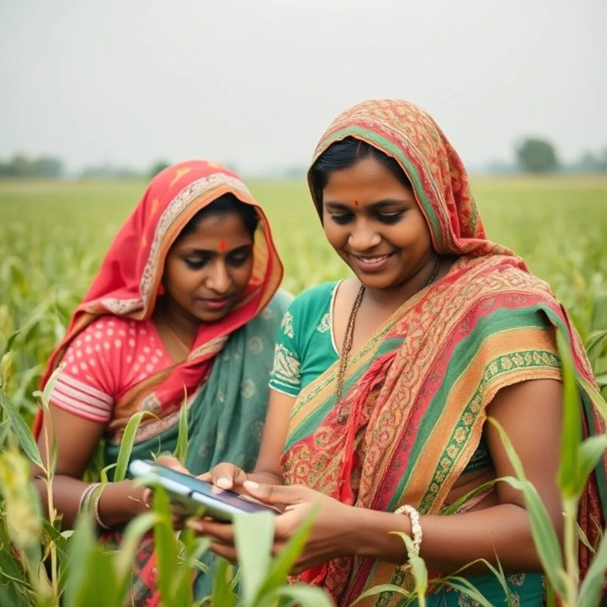

Providing farmers in Kenya and Bihar, India with high-quality, personalized information through AI and developing blueprints for AI-powered Agriculture Information Exchange Platforms

Four prototypes of an AI-powered Agriculture Information Exchange Platforms were developed through four initiatives:
1. DynAG:
Focused on rice, wheat, and maize, DynAG's platform uses a RAG pipeline powered by LLMs like the GPT suite to provide farmers with advisory services. Accessible via chatbots, Android and Jio-based mobile apps, IVR, and SMS, it ensures wide reach. With machine translation and speech recognition, the platform supports communication in English and Hindi while utilizing CGIAR's data backbone for accurate, data-driven insights.
2. Digital Green:
Digital Green's platform supports agricultural value chains like dairy, coffee, and wheat in Bihar and Kenya. It integrates a RAG pipeline, using LLMs under evaluation, and offers services through an app, Telegram, and IVR. Features like machine translation, speech technology, image recognition, and weather data enable localized insights. The platform supports multiple languages, including Hindi, Swahili, Gikuyu, and Marathi, ensuring flexibility across regions. The project has contributed to Digital Greens current FarmerChat.
3. Viamo and Partners:
This platform targets farmers in Kenya and Bihar, focusing on beans and wheat, respectively. Using IVR, SMS, and WhatsApp, the platform is built on a RAG pipeline powered by LLMs, with potential for intent and entity recognition. Machine translation and speech-enabled IVR support English, Hindi, and Swahili, making it accessible across regions. The initiative is part of a broader plan to enhance voice technology for agricultural advisory.
4. Tech for Her:
Tech for Her empowers women farmers in Bihar and Kenya, focusing on tomatoes and cattle. Accessible via IVR, WhatsApp, and a mobile app, the platform uses LLM-powered intent and entity recognition for personalized chatbot interactions and speech-enabled IVR for voice support. AI-based video generation further enhances engagement. Available in English, Hindi, and Swahili, it caters to the specific needs of women in agriculture.
5. Opportunity International/Digifarm:
WhatsApp based bot in Kenya that emerged out of a custom-built solution tested in Malawi.
Data characteristics
The platform allows for uploading and downloading AI model training data for sharing with the community. The data owner can set up access rights for the shared datasets
Model characteristics
[Auto-enriched from linked project resources]
Four AI-powered Agriculture Information Exchange Platform prototypes providing personalized advisory services to farmers in Kenya and Bihar, India. DynAG covers rice, wheat, and maize using a RAG pipeline powered by LLMs, accessible via chatbots, Android/Jio apps, IVR, and SMS in English and Hindi. Digital Green supports dairy, coffee, and wheat value chains via app, Telegram, and IVR with machine translation, speech technology, and image recognition in Hindi, Swahili, Gikuyu, and Marathi. Viamo targets beans and wheat farmers via IVR, SMS, and WhatsApp with LLM-based RAG in English, Hindi, and Swahili. Tech for Her focuses on women farmers growing tomatoes and raising cattle via IVR, WhatsApp, and mobile app with AI-based video generation in English, Hindi, and Swahili. The platform (FarmStack by Digital Green) allows uploading and sharing AI model training data with configurable access rights.
Source: https://dev.platform.farmer.chat/login
Datasets
About
Powered by / Provided by: Digital Green, Viamo, Tech for Her, DynAg, Digifarm, Opportunity International
Catalyzed by: FAIR Forward - AI for All, GIZ
Financed by: Gates Foundation
Contact: Digital Green (info@digitalgreentrust.org), Viamo and Partners (https://viamo.io/contact/), Tech for Her (contact@agrevolution.in), DynAg, Digifarm, Opportunity International (info@oid.org)